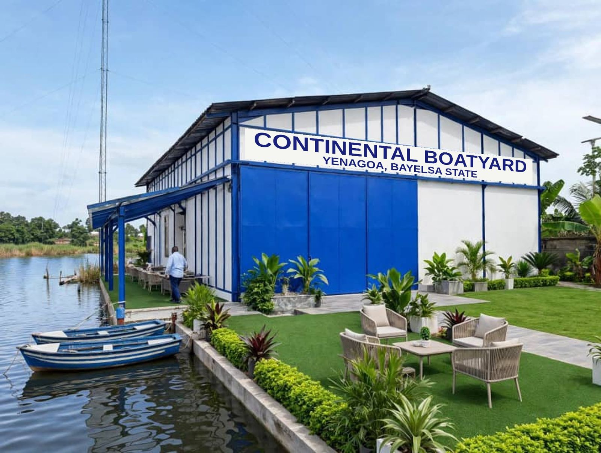
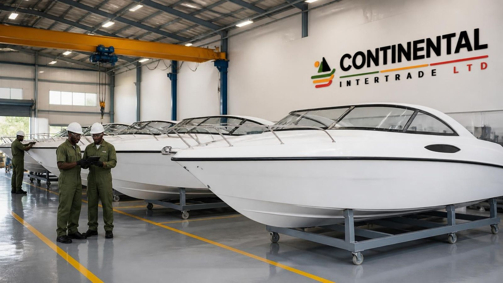
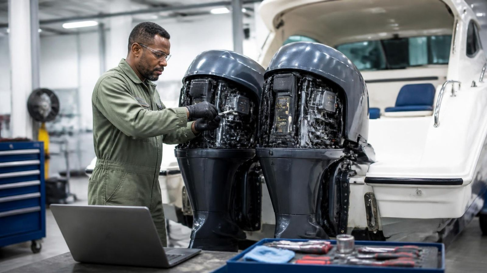
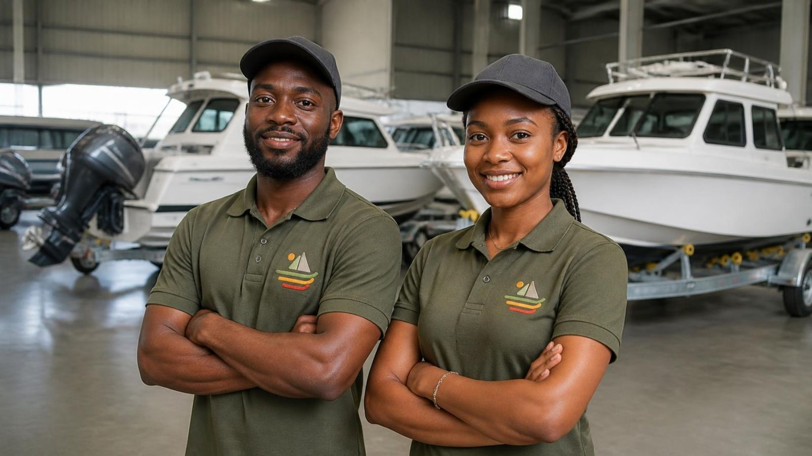
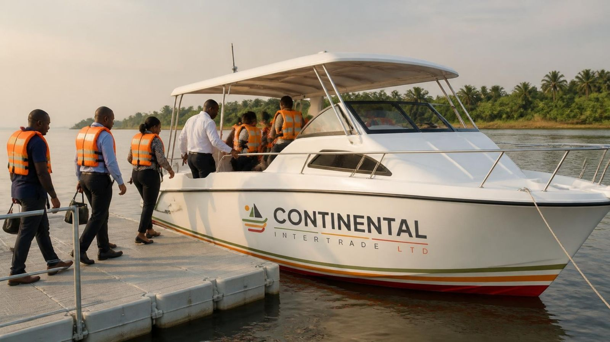
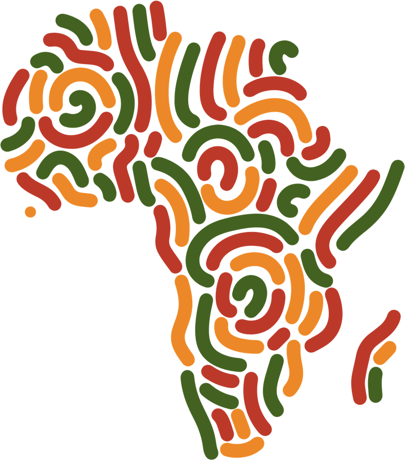
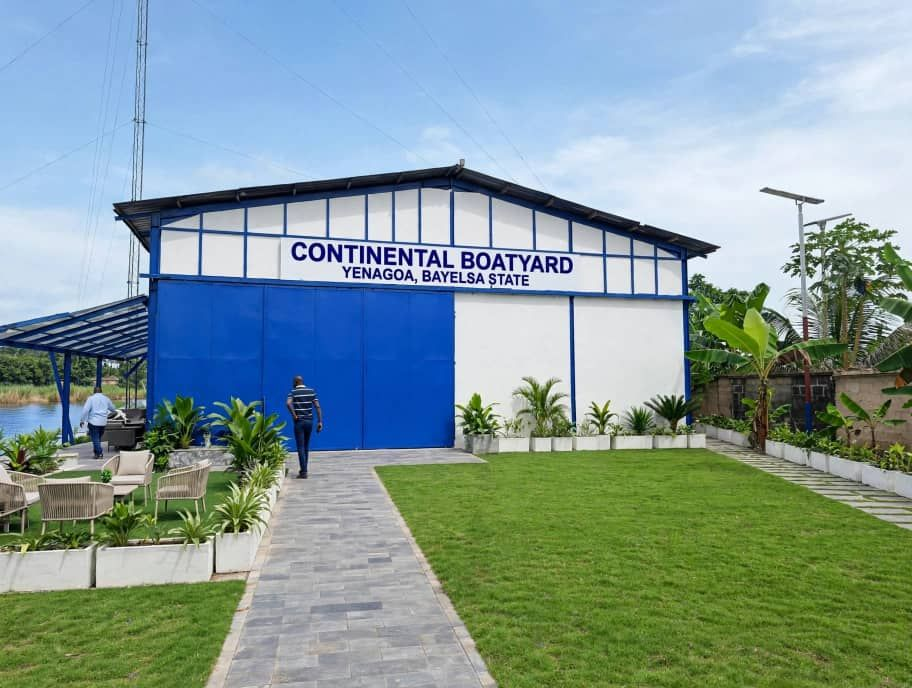
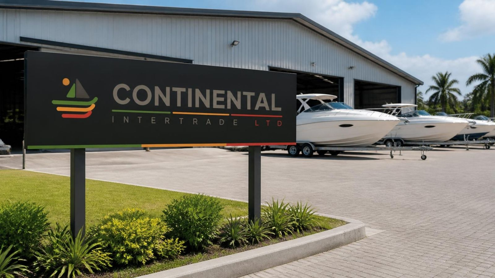
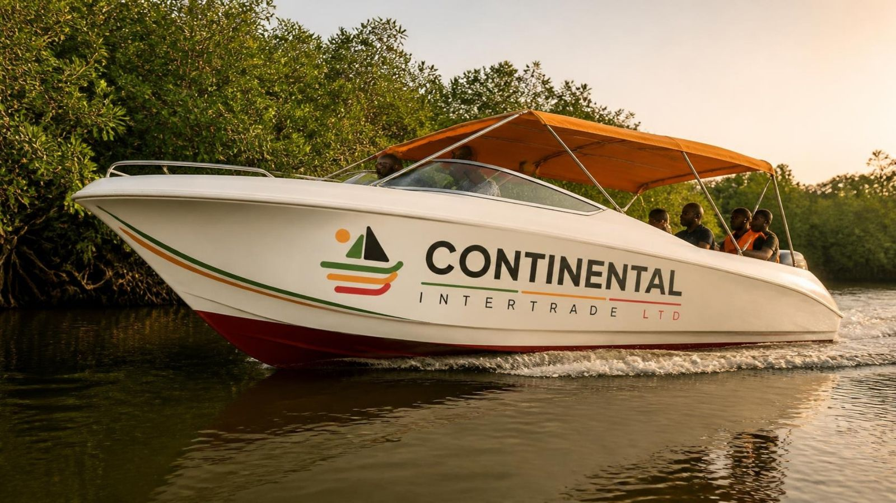
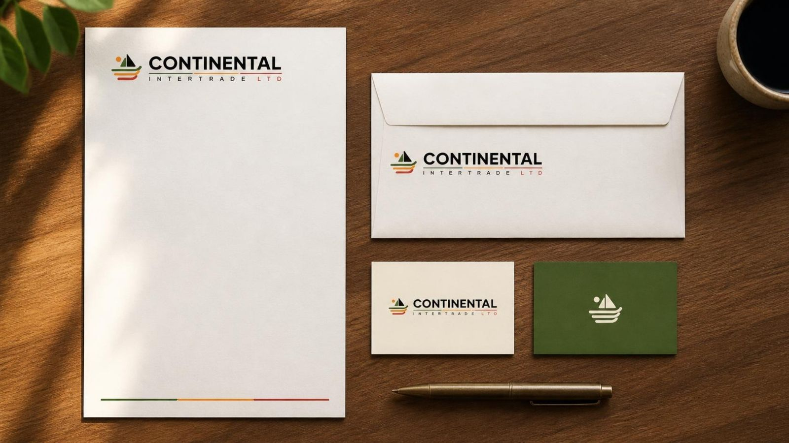

Boat manufacturing · Marine engineering · Maritime training
Building Maritime Capacity. Connecting Communities. Transforming Lives.
Continental Intertrade Ltd is a Nigerian maritime company building boats, keeping vessels working and training young people for careers on Africa's waterways, starting in Bayelsa State.
- Country of incorporation
- Federal Republic of Nigeria
- Area of operation
- Nigeria, with strategic expansion across Africa
- Core business
- Boat Manufacturing, Marine Engineering and Maintenance, Maritime Training, and Coastal Community Development
About the company
Where local maritime needs meet modern marine technology
Continental Intertrade Ltd is a Nigerian company established with a vision to transform the maritime sector through innovative boat manufacturing, reliable marine maintenance services, and practical maritime training for young people.
Through locally relevant boat manufacturing, professional maintenance services, and skills development, we seek to make water transportation safer, more accessible, more efficient, and more affordable.
Read our story →Our core business areas
Four ways we serve Africa's waterways

Vessels built for Nigeria's waterways
Passenger, commercial, fishing, utility, special-purpose and custom-built boats suited to local conditions.
See vessel types →
Keeping vessels safe and working
Preventive maintenance, engine and hull work, refurbishment and maintenance planning for operators.
See our services →
Skills for maritime careers
Practical training in boatbuilding, engines, safety and marine operations, starting in Bayelsa State.
See training areas →
Water transport that connects lives
Reliable boats and services that link communities to schools, clinics, markets and jobs.
See our community work →
Our vision
To become a leading African maritime solutions company, recognised for excellence in boat manufacturing, marine engineering, maritime training, and sustainable development of riverine and coastal communities.
Our mission
To design, manufacture, maintain, and support reliable marine vessels while developing the skills and capabilities of young people in the maritime sector.

Our commitment to Bayelsa State
A strategic starting point on the Niger Delta
Bayelsa's extensive network of rivers, creeks, and coastal settlements creates significant opportunities for boat manufacturing, marine maintenance, maritime skills development, and improved water transportation.
Our Bayelsa priorities →Our African expansion strategy
From Nigeria to the rest of Africa, in four phases
Foundation in Nigeria
Core manufacturing, maintenance and training capabilities.
National Expansion
Other Nigerian states with inland-waterway and coastal needs.
Regional Partnerships
Partnerships and opportunities in West African markets.
Pan-African Development
Strategic expansion into suitable markets across Africa.
Strategic partnerships and investment
Build Africa's maritime future with us
We welcome government institutions, investors, development organisations, private-sector businesses, and community stakeholders interested in practical and sustainable maritime solutions.
Home / About
About the company
A Nigerian maritime company with an African horizon
Boat manufacturing, marine maintenance and maritime training, committed to the development of riverine communities and coastal cities.

Who we are
Bridging local maritime needs and modern marine technology
Continental Intertrade Ltd is a Nigerian company established with a vision to transform the maritime sector through innovative boat manufacturing, reliable marine maintenance services, and practical maritime training for young people. With a strong commitment to the development of riverine communities and coastal cities, the company seeks to provide sustainable solutions that improve transportation, create employment opportunities, strengthen local economies, and enhance the quality of life of people living in water-dependent communities.
Headquartered in Nigeria, Continental Intertrade Ltd is strategically positioned to serve the unique maritime needs of the Niger Delta, beginning with Bayelsa State, while pursuing a long-term ambition to expand its operations and impact across Africa.
Recognising the importance of waterways to commerce, mobility, fishing, tourism, emergency response, and community life, the company aims to bridge the gap between local maritime needs and modern marine technology. Through locally relevant boat manufacturing, professional maintenance services, and skills development, Continental Intertrade Ltd seeks to make water transportation safer, more accessible, more efficient, and more affordable.
Beyond its commercial objectives, the company is committed to social impact. It believes that the future of the maritime industry depends on empowering young people with practical skills, supporting local industries, and creating opportunities for communities whose livelihoods are closely connected to rivers, creeks, lagoons, and coastal waters.
Our vision
To become a leading African maritime solutions company, recognised for excellence in boat manufacturing, marine engineering, maritime training, and sustainable development of riverine and coastal communities.
We envision an Africa where waterways serve as engines of economic growth, young people have access to meaningful maritime careers, and every riverine and coastal community can benefit from safe, reliable, and affordable marine transportation.
Our mission
To design, manufacture, maintain, and support reliable marine vessels while developing the skills and capabilities of young people in the maritime sector.
We are committed to delivering innovative, durable, and cost-effective maritime solutions that address the practical needs of riverine communities and coastal cities, create employment, stimulate local enterprise, and contribute to sustainable economic development across Nigeria and Africa.
Our value proposition
Commercial expertise, technical capability, community engagement
Continental Intertrade Ltd seeks to distinguish itself through the combination of commercial expertise, technical capability, community engagement, and human-capital development.
Locally Relevant Solutions
We aim to provide boats and marine services designed around the realities of African waterways and the needs of local operators.
Quality and Reliability
We seek to promote dependable workmanship, appropriate materials, sound engineering practices, and professional maintenance standards.
Skills and Employment
We aim to create opportunities for young people to develop practical skills and participate in the maritime economy.
Community-Centred Development
We believe maritime businesses should contribute to the wellbeing and economic advancement of the communities they serve.
Safety and Responsibility
We are committed to encouraging safe vessel operations, appropriate training, compliance with applicable regulations, and responsible environmental practices.
Long-Term Partnerships
We seek mutually beneficial relationships with government institutions, investors, development partners, vessel operators, educational institutions, and local communities.
Corporate values
Our business philosophy is guided by the following core values
Safety, quality and environmental responsibility
Responsibility to passengers, workers, communities and the environment
Continental Intertrade Ltd recognises that maritime operations involve responsibilities to passengers, vessel operators, workers, communities, and the environment. The company intends to integrate safety and responsible operating practices into its manufacturing, maintenance, and training activities.
Our commitments include:
- Promoting vessel designs and construction practices appropriate to intended operating conditions.
- Encouraging compliance with applicable maritime, environmental, and occupational safety requirements.
- Supporting the proper use of life-saving equipment and emergency procedures.
- Promoting appropriate inspection, maintenance, and documentation practices.
- Encouraging responsible waste management and pollution prevention.
- Seeking relevant approvals, technical partnerships, and professional standards as our operations develop.
We believe that safe, durable, and responsibly maintained vessels are fundamental to public confidence and sustainable maritime growth.
Our long-term aspiration
More than a boat manufacturing and maintenance company
Continental Intertrade Ltd aspires to become more than a boat manufacturing and maintenance company. We aim to become a trusted maritime development partner that connects people, supports livelihoods, develops technical talent, and unlocks the economic potential of Africa's waterways.
From Bayelsa State to other parts of Nigeria and ultimately across Africa, our ambition is to contribute to a future in which locally developed maritime solutions improve mobility, create jobs, strengthen communities, and expand economic opportunity.
We believe that when waterways become safer and more accessible, when young people gain valuable technical skills, and when local communities participate in the industries that serve them, maritime development can become a powerful instrument for inclusive growth.
Continental Intertrade Ltd is committed to pursuing this vision through responsible business practices, strategic partnerships, technical development, and a sustained focus on the needs of the people and communities we serve.
Home / Boats
ABoat Manufacturing and Assembly
Continental Intertrade Ltd seeks to establish a strong presence in boat manufacturing and assembly, producing vessels suited to the geographical, commercial, and environmental conditions of Nigeria's waterways and the wider African maritime market.

Our proposed manufacturing focus
Six vessel types for working waterways
Building local capacity
Quality workmanship, made in Nigeria
The company intends to promote local production, responsible material sourcing, quality workmanship, and appropriate marine engineering standards.
By developing local manufacturing capacity, Continental Intertrade Ltd aims to reduce dependence on imported vessels where locally manufactured alternatives are suitable, support Nigerian industries, and create opportunities for skilled and unskilled workers.
Need a vessel?
Tell us where it will operate and what it will carry
Home / Maintenance
BBoat Maintenance, Repair and Marine Engineering
The performance and safety of marine vessels depend on regular inspection, proper maintenance, and timely repairs. Continental Intertrade Ltd aims to provide dependable maintenance and repair services that help vessel owners and operators protect their investments and maintain operational efficiency.
Our planned services
From routine servicing to full refurbishment
Routine servicing
Routine boat servicing and preventive maintenance.
Engines
Engine inspection, servicing, and repair.
Hulls
Hull inspection, repair, and refurbishment.
Mechanical and electrical
Mechanical and electrical maintenance.
Components
Replacement of worn or damaged components.
Assessment and planning
Technical assessment and maintenance planning.
Refurbishment
Refurbishment of existing boats to improve reliability and service life.
Operator support
Maintenance support for commercial operators, fishing businesses, community transport services, and other maritime clients.
The outcome
A stronger maintenance culture on the water
Through these services, the company seeks to reduce avoidable equipment failures, minimise downtime, improve operational reliability, and promote a stronger maintenance culture within the maritime industry.
Home / Training
CMaritime Training and Youth Empowerment
Continental Intertrade Ltd recognises that young people are essential to the future of the maritime industry. The company therefore places youth empowerment and practical skills development at the heart of its long-term social impact strategy, beginning in Bayelsa State.
Potential training areas
Market-relevant technical and vocational skills
Our proposed training initiatives will focus on equipping young people with market-relevant technical and vocational skills that can support employment, entrepreneurship, and career development in the maritime sector.
- Boatbuilding and fabrication.
- Marine engine servicing and maintenance.
- Basic marine mechanical and electrical systems.
- Vessel inspection and maintenance procedures.
- Maritime safety and emergency preparedness.
- Safe boat handling and seamanship, through appropriately approved training arrangements.
- Marine operations and logistics.
- Entrepreneurship and small-business development in the maritime industry.
How we will train
Practical programmes, delivered with accredited partners
Classroom instruction
Theory and safety foundations taught in structured sessions.
Workshop experience
Time on real hulls, engines and systems in the workshop.
Supervised hands-on learning
Practical tasks under the eye of experienced technicians.
Industry exposure
Contact with operators, employers and the wider maritime economy.
Where required, training and certification will be delivered in collaboration with appropriately accredited institutions and relevant maritime authorities.
Our long-term objective is to help young people in Bayelsa State and other riverine communities acquire practical skills that can lead to employment, self-employment, business ownership, and participation in Nigeria's growing maritime economy.
Young and ready to learn?
Register your interest for upcoming programmes
Home / Communities
DMaritime Solutions for Riverine and Coastal Communities
In many riverine areas, water transportation is not simply an alternative means of movement; it is an essential connection to education, healthcare, markets, employment, and public services.
Our community-oriented priorities
Boats, maintenance and partnerships that serve communities
The company seeks to support these communities by developing and supplying suitable vessels, maintaining existing boats, and working with public and private stakeholders to improve marine transportation infrastructure and services.
- Improving access to reliable boats for local transportation.
- Supporting access to markets and essential services.
- Enabling fishing communities to transport people, equipment, and produce.
- Supporting the movement of goods between riverine settlements and urban centres.
- Promoting safer and more dependable water transportation.
- Creating local employment through manufacturing, maintenance, and maritime training.
- Exploring partnerships that improve access to affordable marine transportation.
By responding to the practical needs of riverine communities and coastal cities, Continental Intertrade Ltd aims to make maritime development a direct contributor to improved living standards.
Our commitment to Bayelsa State
Bayelsa as a centre for maritime skills and boat manufacturing
Continental Intertrade Ltd intends to contribute to the development of Bayelsa State by promoting local maritime enterprise and building opportunities for young people.
Our proposed priorities include:
- Establishing and developing boat manufacturing and maintenance capabilities.
- Creating pathways for young people to acquire practical maritime and technical skills.
- Exploring apprenticeship and vocational development programmes.
- Supporting local employment and small-business participation in the marine value chain.
- Collaborating with government agencies, educational institutions, community leaders, and private-sector partners.
- Encouraging local participation in boatbuilding, marine engineering, logistics, and related services.
- Promoting a culture of safety, environmental responsibility, and professional standards.
Our ambition is to help position Bayelsa State as an important centre for maritime skills, marine engineering, and boat manufacturing in Nigeria, with the potential to serve other parts of the country and the wider African market.
Social and economic impact
Maritime enterprise as a platform for business growth and social transformation
By developing boat manufacturing, maintenance, and training capabilities, the company aims to contribute to a maritime value chain that creates jobs, strengthens local businesses, and improves access to essential services.
- Direct and indirect employment opportunities.
- Technical skills development for young people.
- Increased participation of local workers and businesses in maritime activities.
- Improved access to dependable marine transportation.
- Support for fishing, trade, logistics, and other water-dependent livelihoods.
- Development of local manufacturing and maintenance capacity.
- Greater opportunities for entrepreneurship and vocational advancement.
- Stronger economic connections between riverine settlements and urban markets.
How we will measure it
Over time, the company intends to assess its community programmes through practical indicators such as:
Home / Partner with us
Strategic partnerships and investment opportunities
Partner in practical, sustainable maritime development
To achieve its objectives, Continental Intertrade Ltd seeks to build strategic relationships with organisations and individuals that share its commitment to maritime development and inclusive economic growth.

Potential areas of collaboration
Ten ways to work with us
Manufacturing facilities
Investment in boat manufacturing and assembly facilities.
Engineering workshops
Development of marine engineering and maintenance workshops.
Training centres
Establishment of maritime vocational training centres.
Youth programmes
Youth apprenticeship and employment programmes.
Public-private partnerships
Public-private partnerships for water transportation solutions.
Technology transfer
Technology transfer and technical cooperation with established boatbuilders.
Accredited training
Partnerships with accredited maritime training institutions.
Supply arrangements
Supply arrangements for vessels, engines, components, and marine equipment.
Impact finance
Development finance and impact investment for community-oriented maritime projects.
Regional distribution and service
Regional distribution and service partnerships across Africa.
Our African expansion strategy
A strong foundation in Nigeria before other African markets
Continental Intertrade Ltd has a long-term vision that extends beyond Nigeria. The company seeks to develop into a recognised African maritime enterprise capable of delivering practical marine solutions across countries with significant riverine, inland-waterway, and coastal transportation needs.
Foundation in Nigeria
Develop core manufacturing, maintenance, and training capabilities; establish relationships with local customers and institutional partners; and build a reputation for reliability, quality, and service.
National Expansion
Extend services to other Nigerian states with significant inland-waterway and coastal transportation needs, while strengthening technical capacity, distribution, and after-sales support.
Regional Partnerships
Explore partnerships and business opportunities in West African markets where local transportation, fishing, marine commerce, and industrial operations create demand for appropriate vessels and marine services.
Pan-African Development
Pursue strategic expansion into suitable markets across Africa through partnerships, technical collaborations, distribution arrangements, service centres, and locally responsive manufacturing solutions.
This phased approach is intended to support responsible growth, sustainable investment, and the development of a competitive African maritime brand.
Our target customers and partners
Who we serve
The company will seek to develop tailored solutions for different customer groups, with an emphasis on reliability, affordability, long-term service support, and measurable value.
- Federal, state, and local government institutions.
- Maritime and inland-waterway transport operators.
- Fishing businesses and fishing cooperatives.
- Oil and gas support service companies.
- Marine construction and industrial operators.
- Tourism, hospitality, and coastal transport businesses.
- Community associations and riverine development organisations.
- Educational and vocational training institutions.
- Investors, development finance institutions, and impact investors.
- Non-governmental organisations and development partners.
- Private individuals and commercial vessel owners.
Home / Contact
Contact us
Talk to Continental Intertrade
Vessels, maintenance, training or partnerships: reach our head office in Abuja or visit the boatyard in Yenagoa.
3rd Floor, The Mall by Funab, First Avenue, Gwarimpa, Abuja
B66 Efab Mall, Area 11, Garki, Abuja
Continental Boatyard, The Marine Base, Ovom, Yenagoa, Bayelsa State
Our guiding belief is simple
Better Boats. Better Skills. Better Connections. Better Lives.